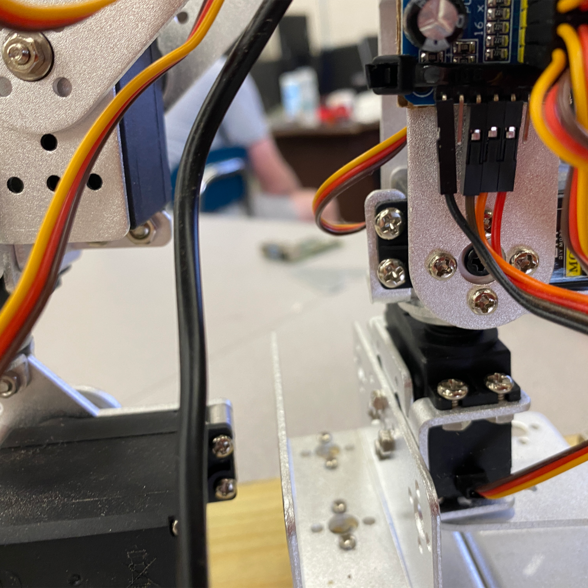
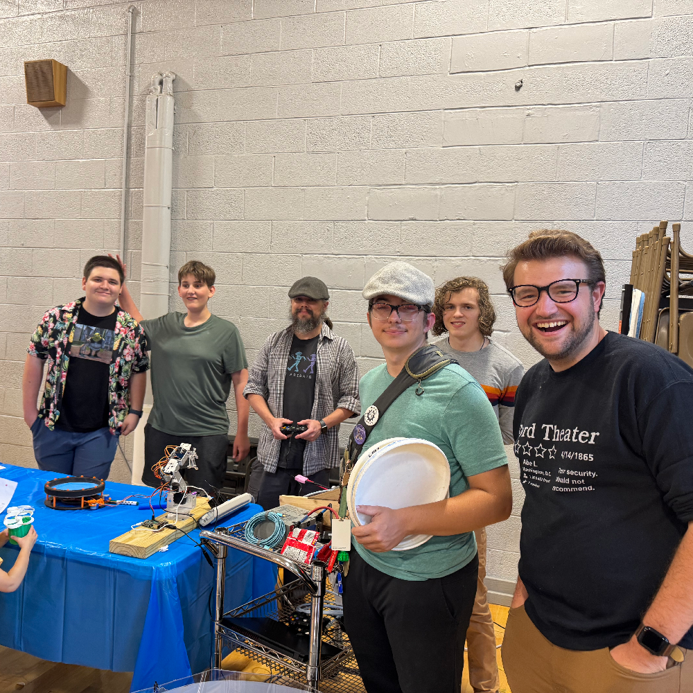

Fun Fact
Despite being recruited specifically as a programmer for the team, I have ended up doing a significant amount of eletrical work as well.
Overview
I am currently part of the West High School FIRST Robotics team 9668 "Malfunctionz." In particular, I focus on handling most of the team's coding, ranging from robot control systems to any potential application needs which may arise. Whenever needed, or when there is little need for new code, I also assist with the team's electrical work. I was specifically recruited due to being one of the few students at the school known for being good with code - not a common occurrence due to the West High School computer science department being extremely limited.


The majority of the team's robot control systems are currently written using Java. As such, I had to learn the language upon first joining the team, having most of my prior coding experience in C#. Additionally, we have also incorporated basic machine vision into our systems using the PhotonVision vision system. Additionally, I have also begun working with basic interapplication networking via WPILib NetworkTables as part of developing the team's new dashboard application.
Fun Fact
Due to our previous dashboard application being deprecated following the 2026 competitive season, I have ended up developing our own custom dashboard from scratch using C#.